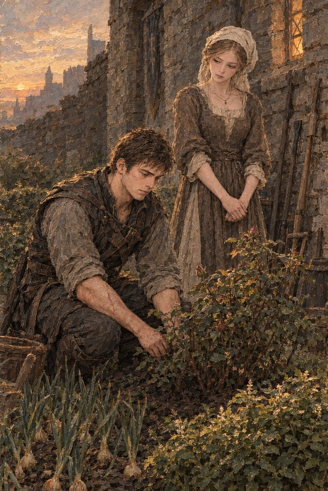

Record 13 of 15
Behind the old armory
Behind the old armory Reinolt grows onions, mint and a stubborn rosebush that has never bloomed. Three days after her confession Frida finds him there, and he asks whether she loved him for the whole of it or only some smaller, harder-to-locate part.
At sunset in a small walled garden, a young man in a brown leather jerkin with a scar down his bare forearm kneels weeding beside a rosebush with a few red buds, onions growing in the foreground and a basket at his side, while a young woman in a cream head-cloth and brown dress stands with her hands clasped looking down at him against a stone wall hung with garden tools, a castle skyline and a low red sun behind.